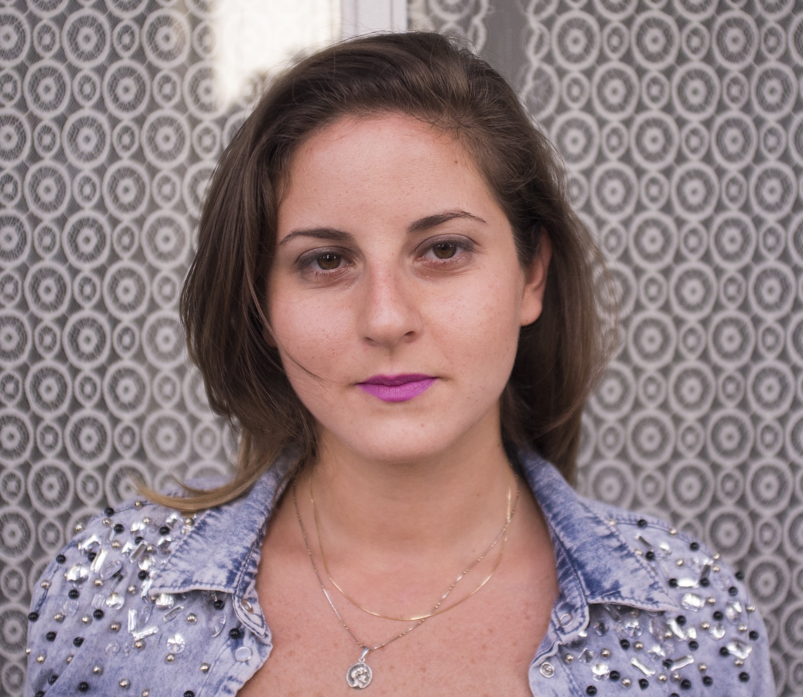
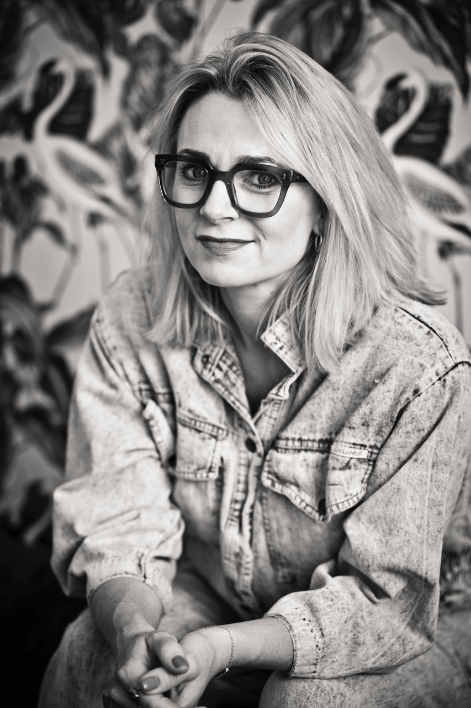

About Cycles of Change
Bringing together artists, performers, writers and designers, this initiative sets the
agendas that drive contemporary performance practice in the UAE.
With Performance in Practice we ask: What is the socio-political context for contemporary
performance? What is its purpose? Who is it for? What might it be?
Rooted in experimentation and often informed by current social, political, and cultural
contexts, we aim to challenge traditional notions of performance culture and audience engagement.
Rather than adhering to fixed genres or formats, it is about embracing hybridity,
interdisciplinarity, and innovation by interrogating the relationship(s) between media,
time-based practice, dance, theatre, music and visual art.
The artists involved explore new modes of storytelling, embodiment, and space,
creating work that is dynamic, immersive, participatory, and thought-provoking.
At its core, this platform invites us to question norms and experience art in transformative
and boundary-pushing ways.
Stage managers: Azza Alaeddine and Mahasin Jad
Program website: Carlos Páez González
A very special thanks to: Moustafa Zakaria, Meera Abdulrahim Salem,
Farah Obeidat, Poorvaja Subramanian, Ramzi Daouk, Carlos Páez González, Rebecca Crookshank,
Mahasin Jad, Azza Alaeddine
And a special thanks to Gaith Abdulla, whose initiative and constant support has been key to this project.
Cycles of Change was produced by:
Dalia Yassine

Dalia Yassine is a Lebanese film and performance maker currently based in Dubai.
Her interdisciplinary practice investigates hybrid arenas between cinematic, immersive and live
experiences through the crossover of lens-based work, contemporary performance, visual and
installation art.
She holds a Postgraduate Degree in Filmmaking from The London Film Academy and an MA in Performance
Design and Practice from Central Saint Martins. Her works have been supported by AFAC, Cinephilia Productions,
MED Film Festival, EVA London and have been showcased in London, Beirut, Italy and Greece.
Blending experimental techniques with narrative-driven content, her work is rooted
in representing human variation and fragility while delving into the complexities of identity,
transformation, memory and trans-corporeality. Looking at the body as ritual, living sculpture and a
landscape of our narrative subconscious, Dalia’s practice becomes a playground for the visual, verbal
and the visceral where movement across bodies, nature and environments alter our sense of self.
From live bodily presence to intimate screen-based aesthetics, her projects are intended to transport
her audience into an all-encompassing setting while transcending into the surreal, the haunting and
the uncanny.
With support from:
Rebecca Crookshank

Rebecca Crookshank is an award winning playwright and screenwriter. Her debut play, WHISKEY
TANGO FOXTROT, published by Bloomsbury, premiered on 42nd Street, New York, earning a
shortlist for the Liberty Human Rights Arts Award and nominations for four Broadway World
Awards. Currently, she is developing a six-part series with Cameron Roach at Rope Ladder Fiction,
commissioned by the BBC, focusing on themes of universal womanhood and
cross-cultural friendship. Her international projects span film, TV, and theatre, including the
UK/Vietnam action film, THE RED RIVER, alongside BFI Vision Awardee Jude Goldrei, and
collaborations with Boomtown Productions and Netflix MENA. She has adapted Craig Zobel’s film,
COMPLIANCE, for the stage in New York. Her project, Carlisle House, co-written with Jessica
Norman, was selected for MIA ROME 2023. Rebecca’s first short film, ALEXA AND ME, has been
officially selected for multiple film festivals. She is an innaugral member of the BAFTA Crew and an
alumni playwright on the Old Vic 12. As a recent guest resident at the Alserkal Arts Foundation in
the UAE, she continues to expand her international visual arts practice and immersive writing
workshop process and provides space for artists at her ‘Off the Grid’ salon.
Carlos Páez González

Carlos is a multidisciplinary theater artist, game designer, and educator. Since the age of 13,
Carlos has been consistently performing for public audiences, first in Venezuela and in Abu Dhabi
since 2012. Carlos has created work that has been performed in venues such as Alserkal Avenue,
Dubai Expo 2020, and the NYUAD Arts Center. He currently runs a series of recurring workshops at
421 Art Campus, which center performance and building community, and develops new performance work
with the collective City of Movement.
Carlos holds a BA (hons.) in Theater from NYUAD and a minor in Game Design from NYU Tisch